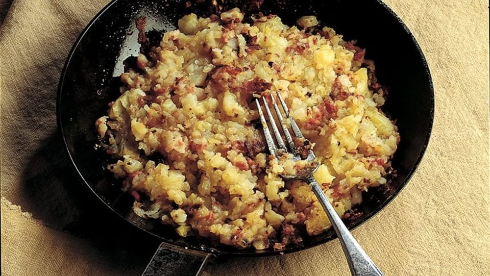

Patate in tecia

Description
Patate in tecia are potatoes that are boiled, cut into pieces,
then pan-fried with onions and pancetta until they develop a nice golden crust.
Ingredients
- Potatoes: 1 kilo yellow fleshed potatoes.
- Pancetta: 100g.
- Onion One small onion.
- Butter or lard: 50g.
- Broth: Some homemade broth.
- Seasonings: Salt and pepper.
Steps
-
Boil the potatoes, still in their jackets, until they are almost tender
but still a bit firm. Let cool, and when they’ve cooled off enough to handle,
peel and cut them up.
-
While the potatoes are boiling, in a large non-stick or well-seasoned cast iron
or carbon steel skillet, gently sauté the pancetta and onion in your chosen fat
until lightly brown.
-
Add the cut up potatoes to the skillet and raise the heat.
Turn the potatoes with the pancetta and onion. Add a half-ladleful of broth
and let simmer until the potatoes are fully tender, adding more broth if needed.
Turn the potatoes from time to time and mash them with a fork into a rough hash.
Taste and season with salt and pepper to taste.
-
Once the potatoes are fully tender, let any remaining broth evaporate.
Continue to sauté but stop turning the potatoes so a nice crust forms on the bottom.
Once the potatoes are fully tender, let any remaining broth evaporate.
Continue to sauté but stop turning the potatoes so a nice crust forms on the bottom.
- Now you can either flip the potatoes over in one piece, forming a kind of pancake,
as you might a frittata or, closer to this dish, a frico, or simply turn flip the potatoes
in parts with a spatula. Keep flipping if need be so the potatoes have a nice crust
all over.
- Serve hot.
Home page